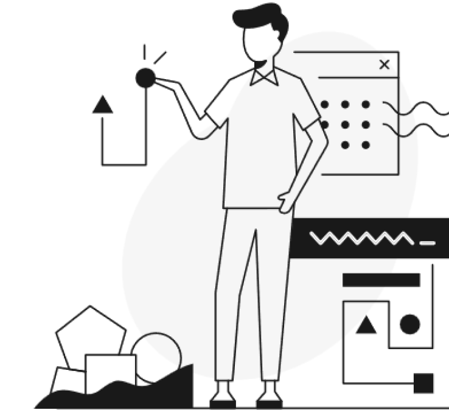

{% extends "base.html" %}
{% block content %}
{% with messages = get_flashed_messages() %}
{%if messages %}
{{messages[0]}}
{% endif %}
{% endwith %}
Melhore a eficiência da emissão de suas notas fiscais
Com a manipulação automatizada do navegador, suas notas podem emitidas diretamente do site da prefeitura automaticamente

{% endblock %}